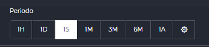
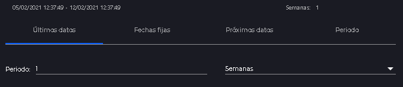
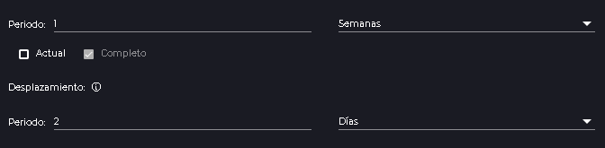
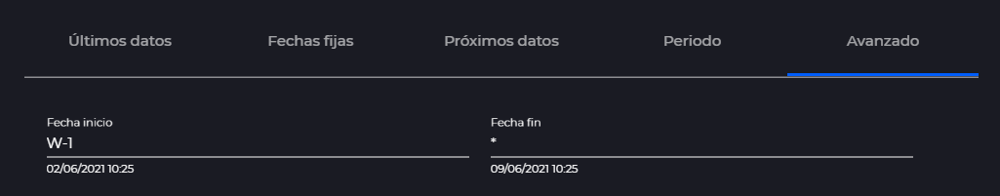

Date selector
- 1 Introduction
- 2 Reduced date selector
- 3 Interval selector
- 4 Complete date selector
- 4.1 Latest data
- 4.2 Fixed dates
- 4.3 Upcoming data
- 4.4 Period
- 4.4.1 Displacement
- 4.5 Advanced dates
1. Introduction
The date picker is a basic tool of IDboxRT, which allows you to select both static dates and dynamic time intervals.
There are 3 ways to open the date picker, spread over the different sections of the website.
2. Reduced date selector
The most common date selector is the one that looks like a text field, which can be found for example in the launcher or in the right panel of the series configuration.

As a base we have a text field with the start and end dates written. We will be able to write to change each of the dates, always keeping the format shown by default. The dates selected by typing will be taken into account as fixed dates.
If instead we need a more complex configuration we can click on the calendar shown to the right of the text field and a modal window will open with the complete date selector.
3. Interval selector
The range selector is used to quickly select a date range from “Latest data”. It consists of a group of buttons with some predefined date periods. They can be identified by a number and the first letter of the period they represent (Hours, Days, Weeks, Months or Years).

If the configuration we are looking for does not comply with the options shown, we could click on the button and a modal window will open with the complete date selector.
4. Complete date selector
All date configurations available in IDboxRT can be configured in this component.

In the upper part we will be able to visualize the dates that would result from the calculation of the selected interval. To its right, we will have an approximation of the selected interval, for example, if we select a period of 1 week and 4 days, 1 week will be displayed.
Below this we can see a series of tabs:
4.1 Latest data

Allows you to select a date range composed of a number and a unit. The selected period will be taken into account from the current time backwards and will be updated each time it is consulted.
4.2 Fixed dates

Allows you to select a date range consisting of date and time. For the dates a calendar will be displayed by clicking on one of the two upper fields. Clicking on the first field will allow you to modify the start date, then the end date and then the calendar will close. On the other hand, if we click on the date field it will only ask for the end date and it will collapse when we select it.
The selected dates will be static.
4.3 Upcoming data
For this section to be available, it must be activated in the configuration file.

Allows you to select a date range composed of a number and a unit. The selected period will be taken into account from the current time forward and will be updated each time it is consulted.
4.4 Period

It is based on the operation of the last-data selector but with additions. The first thing will be a selector equal to the one used in last-data.
After that we will have two checks:
-
Current: It will indicate if the period we want to see is in progress or not. Ex: If we have selected a week in the first part and we select “Current” the resulting dates will be from the first moment of the week to the current moment. However, with “Current” deactivated the dates will be from the beginning of the previous week to the end of the previous week.
-
Complete: The check “Complete” forces the end date to be the end of the period. In the case of selecting the current week it would end at the time of now. However, if we select “Complete” the period will end at the end of the week, implying a future date. For the result of this calculation to return future dates it will be necessary to activate the corresponding parameter in the configuration file.
4.4.1 Displacement
The displacement is used to move the time interval forward or backward in time, it is like adding dates. We can select the value and the units. If the value is negative we will subtract days and if it is positive we will add. When adding dates, future dates will only be calculated when the corresponding parameter in the configuration file is activated.
E.g.: If we want to see the period corresponding to 2 days ago we will have to first select 1 day in the normal period selector, and then in the scroll section select -2 days.
4.5 Advanced dates

Allows you to select an independent start and end date, specifying a formula for each of them. This formula will be divided into groups of operators, which will be separated by spaces.
Each operator will consist of a letter representing a time period, a mathematical symbol (+, - or =) and a value.
- D: Days
- W: Weeks
- M: Months
- Y: Years
- h: Hours
- m: Minutes
- s: Seconds
For any of these operators (X) these operations can be performed:
- D=1 Assigns the value 1 to the current day.
- M+2 Assigns to the current month a +2, if we are in June will show August
- Y-1 Assigns to the current year a -1, if we are in 2021 it will show 2020
If any period is not affected by any operator it will use the value of the current date.